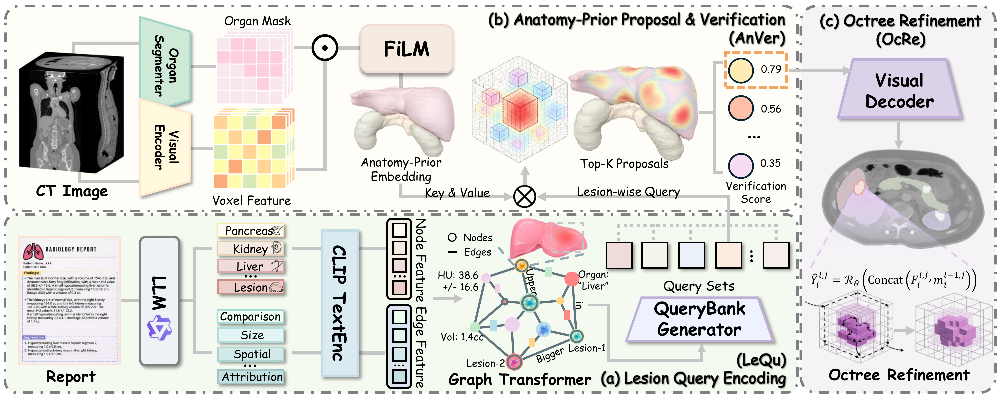

GLeVE
Early AcceptPosterShortlisted for the MICCAI 2026 Best Paper & Young Scientist awards (Top 0.5%).
Graph-Guided Lesion Grounding with Proposal Verification in 3D CT
Connecting radiology reports to 3D lesions through graph reasoning, anatomical verification, and coarse-to-fine refinement.